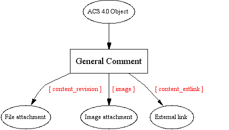

User directory: /general-comments/
ACS administrator directory: /general-comments/admin/
TCL API:
PL/SQL API:
none
Data model:
General Comments enables all users in the community to add a comment to any object in the system. Any comment can have files or hyperlinks attached.
This package is intended to utilize the users' engagement in the community by letting them voice their opinion on any topic (object) on the site. Commenting an article, a press release or any other object is never more than a click away.
Administrators can choose to put comments on hold until they've been approved or moderated.
User feedback is an invaluable resource for improvements. For example, the usage of General Comments on documentation not only allows feedback, it can shape, extend and refine draft ideas before they are taken to the next level.
General Comments in ACS 4.0 differs from previous versions by utilizing the ACS Object system, introduced in 4.0. The data-model has been changed to accomodate this adoption.
In ACS 3.x, general comments did not have revisioning. Let's assume that in an ACS 3.x installation, the policy for comments was set to "closed", meaning comments must be approved by an administrator before it goes live. The following unwanted scenario could occur:
A user posted a comment which was approved by the administrator.
The user notices that there was a spelling error, and makes a change to the posted comment.
From the time of the user's correction to the time the adminstrator re-approves the comment, other users will not be able to read the comment, since the new data replaced the old one.
General Comments implements the revisioning feature provided by the Content Repository. Users are able to view all of their revisions for a comment, along with an indication of which revision is live. This allows the contents of an older revision to be seen by the public while a newer revision is awaiting adminstrative approval.
not available
not available
TCL API
There is one core procedure, general_comments_get_comments, that will show comments on an object and make appropriate links to files from the general-comments package for recording and editing user comments. An optional return_url can be specified which will be provided as a link to the user within the general-comments pages. This is useful for the user to return to the original page after making a comment.
The other procedure, general_comments_create_link, is a wrapper procedure that returns an html fragment for a link which points to the location of the mounted general_comments package. There are various switches that will be useful to package developers:
object_name: A name for the object being commented on is displayed throughout the general-comments pages. Defaults to [acs_object_name].
link_text: The text of the link returned. Defaults to "Add a comment".
context_id: The context_id to set for the comment. Defaults to the object_id of the object being commented on.
category: This feature is not complete. The purpose is to allow separation of comments on the same object into categories.
A problem that may occur is when any of the two tcl procedures are called when the general-comments package is not mounted. Both general_comments_get_comments and general_comments_create_link needs to find out the location of the mounted general-comments instance to generate correct links. In this case, both procedures will return nothing and log a notice.
Note: In the alpha release of general-comments, the tcl procedures were defined within a namespace and encountered problems with the api browser not being able to display them properly. These procedures have now been moved out of the namespace and the old ones are marked as deprecated. The final version will completely remove all traces of the namespace procedures.
PL/SQL API
None. Uses PL/SQL functions provided by ACS Messaging.
The majority of the functionality of general comments has been merged with acs-messaging. Comments are stored as acs-messages.
The general_comments table extends acs_messages to provide categorization of comments on a particular object. general_comments also stores the object_id of the object the comment refers to. Relationships from attachments to acs-message is done by using the cr_items.parent_id column.

A general-comment can be associated with any object in the system by using the general_comments.object_id column. Because each comment is itself an object, we could implement comments on comments. However, this functionality is not needed in the general-comments model and the UI does not support comments on comments.
There are three types of attachments a user can create: file, image, and url. The underlying data representation of an attachment is a content item with different content_types. File attachments are stored with a content_revision type. Image attachments are stored with a image type. Url attachments are stored with a content_extlink type.
One problem we face is how to allow designers to modify the presentation of the comments on an object without modifying tcl code. The proc general_comments_get_comments has html code which should really be placed into a template. Karl Goldstein code reviewed general comments and has an interesting solution:
Add an -uplevel parameter to db_multirow.
In the general_comments_get_comments proc, create an upleveled datasource.
From the .tcl page, make a call to general_comments_get_comments, which would set up the multirow datasource in the current environment.
From the .adp page, loop through the multirow datasource.
General Comments provides two similar sets of UIs for adminstrators and normal users. The adminstrator UI allows approval/unapproval of comments as well as deletion of comments. The normal user UI presents to users all of their created comments, with links to editing and creating attachments.
AutoApproveCommentsP: Sets whether comments go live immediately.
AllowFileAttachmentsP: Sets whether files can be attached to comments.
AllowLinkAttachmentsP: Sets whether links can be attached to comments.
MaxFileSize: Maximum file size that can be uploaded in bytes.
Subsite administration
Cascading parameters to depending packages.
Revisioning of attachments
| Document Revision # | Action Taken, Notes | When? | By Whom? |
| 0.2 | Revision | 12/11/2000 | Phong Nguyen |
| 0.1 | Creation | 10/26/2000 | Phong Nguyen |
Last modified: $Id$